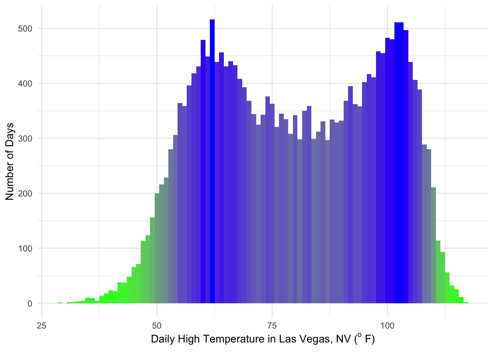

5 A Grammar for Graphs
“Hell isn’t other people’s code. Hell is your own code from 3 years ago.” — Jeff Atwood’
The last lesson introduced the functions from the dplyr package for manipulating data frames in a grammatically consistent way. This makes data munging easier. The piping operator allows you to write code that is legible. This lesson introduces a grammar for making graphs.
Some of this material is taken from Sharp Sight Labs.
The package ggplot2 and dplyr are part of tidyverse, which is a group of packages for data manipulation and visualization. A recent 2016 survey by O’Reilly media showed that ggplot2 is the most frequently used data visualization tool among employed data scientists. It’s popular because it teaches you how to think about visualizing your data. There are a few principles underlying the syntax.
- Mapping data to aesthetics
- Layering
- Building plots iteratively
We make the functions available to our currenct working directory by typing
5.1 Principle 1: Map data to aesthetics
Consider the following vectors of data. Create a data frame df2 using the data.frame function.
foo <- c(-122.419416,-121.886329,-71.05888,-74.005941,-118.243685,-117.161084,-0.127758,-77.036871,
116.407395,-122.332071,-87.629798,-79.383184,-97.743061,121.473701,72.877656,2.352222,
77.594563,-75.165222,-112.074037,37.6173)
bar <- c(37.77493,37.338208,42.360083,40.712784,34.052234,32.715738,51.507351,38.907192,39.904211,
47.60621,41.878114,43.653226,30.267153,31.230416,19.075984,48.856614,12.971599,39.952584,33.448377,55.755826)
zaz <- c(6471,4175,3144,2106,1450,1410,842,835,758,727,688,628,626,510,497,449,419,413,325,318)
df2 <- data.frame(foo, bar, zaz)
glimpse(df2)## Rows: 20
## Columns: 3
## $ foo <dbl> -122.419416, -121.886329, -71.058880, -74.005941, -118.243685, -1…
## $ bar <dbl> 37.77493, 37.33821, 42.36008, 40.71278, 34.05223, 32.71574, 51.50…
## $ zaz <dbl> 6471, 4175, 3144, 2106, 1450, 1410, 842, 835, 758, 727, 688, 628,…## foo bar zaz
## 1 -122.41942 37.77493 6471
## 2 -121.88633 37.33821 4175
## 3 -71.05888 42.36008 3144
## 4 -74.00594 40.71278 2106
## 5 -118.24368 34.05223 1450
## 6 -117.16108 32.71574 1410To make a scatter plot specify the data frame as the first argument in the ggplot() function and the aes() function as the second argument. The arguments of the aes() function are the x and y positions as foo and bar, respectively. The plot is rendered after adding the geometric object geom_point() as a layer.

We are mapping data to aesthetic attributes. The points in the scatter plot are geometric objects that we draw. In ggplot2 lingo, the points are geoms. More specifically the points are point geoms that we denote syntactically with the function geom_point().
All geometric objects have aesthetic attributes. Things like:
- x-position
- y-position
- color
- size
- transparency
When we create a data visualization in ggplot2, we are creating a mapping between variables in our data and the aesthetic attributes of the geometric objects in our visualization. When we visualize data, we are mapping between variables in our data frame and the aesthetic attributes of the geometric objects in the plot.
In our scatter plot example, when we create this plot, we’re mapping foo to the x-position aesthetic and we’re mapping bar to the y-position aesthetic. This may seem trivial foo is the x-axis and bar is on the y-axis. We can do that in Excel.
But here there is a deeper structure. Theoretically, geometric objects (i.e., the things we draw in a plot, like points) don’t just have attributes like position. They have a color, size, etc.
For example here we map a new variable to the size aesthetic.

We changed a scatter plot to a bubble chart by mapping a new variable to the size aesthetic. Any visualization we see can be deconstructed into geom specifications and mapping from data to the aesthetic attributes of the geometric objects.
5.2 Principle 2: Build plots in layers
The principle of layering is important because to create more advanced visualizations, we often need to:
- Plot multiple datasets, or
- Plot a dataset with additional contextual information contained in a second dataset, or
- Plot summaries or statistical transformations over the raw data
Let’s modify the bubble chart by getting additional data and plotting it as a new layer below the bubbles. First get the data from the maps package and store it in a new data frame.
##
## Attaching package: 'maps'## The following object is masked from 'package:purrr':
##
## map## Rows: 99,338
## Columns: 6
## $ long <dbl> -69.89912, -69.89571, -69.94219, -70.00415, -70.06612, -70.…
## $ lat <dbl> 12.45200, 12.42300, 12.43853, 12.50049, 12.54697, 12.59707,…
## $ group <dbl> 1, 1, 1, 1, 1, 1, 1, 1, 1, 1, 2, 2, 2, 2, 2, 2, 2, 2, 2, 2,…
## $ order <int> 1, 2, 3, 4, 5, 6, 7, 8, 9, 10, 12, 13, 14, 15, 16, 17, 18, …
## $ region <chr> "Aruba", "Aruba", "Aruba", "Aruba", "Aruba", "Aruba", "Arub…
## $ subregion <chr> NA, NA, NA, NA, NA, NA, NA, NA, NA, NA, NA, NA, NA, NA, NA,…Plot the new data as a new layer underneath the bubbles.
ggplot(data = df2, aes(x = foo, y = bar)) +
geom_polygon(data = df3, aes(x = long, y = lat, group = group)) +
geom_point(aes(size = zaz), color = "red")
This is the bubble chart from earlier in the post with a new layer added. We transformed a bubble chart into a new visualization called a “dot distribution map,” which is much more insightful and much more visually interesting.
The bubble chart is a modified scatter plot and the dot distribution map is a modified bubble chart.
We used two of the data visualization principles (mapping & layering) to build this visualization:
- To create the scatter plot, we mapped
footo the x-aesthetic and mappedbarto the y-aesthetic - To create the bubble chart, we mapped a
zazto the size-aesthetic - To create the dot distribution map, we added a layer of polygon data under the bubbles.
5.3 Principle 3: Iteration
The third principle is about process. The process begins with mapping and layering but ends with iteration when we add layers that modify scales, legends, colors, etc. The syntax of ggplot layerability enables and rewards iteration.
Let’s assign to p1 the output of our plot.
p1 <- ggplot(data = df2,
mapping = aes(x = foo, y = bar)) +
geom_polygon(data = df3,
mapping = aes(x = long, y = lat, group = group)) +
geom_point(aes(size = zaz), color = "red")p2 <- p1 + xlab("Longitude") + ylab("Latitude")
p2 <- p2 + scale_size_continuous(name = "Venture Capital Investment\n(USD, Millions)\n")
p2
The facet_wrap() function is a layer to iterate (repeat) the entire plot conditional on another variable. It is like the group_by() function in the data grammar.
5.4 Returning to the tornado data
We plot the number of tornadoes by year for the state of Kansas. Recall, the data are in the data frame df.
df %>%
filter(ST == "KS") %>%
group_by(Year) %>%
summarize(nT = n()) %>%
ggplot(mapping = aes(x = Year, y = nT)) +
geom_line()
We create a bar chart indicating the number of tornadoes by EF rating since 2007.
df %>%
filter(Year >= 2007, EF != -9) %>%
group_by(EF) %>%
summarize(Count = n()) %>%
ggplot(aes(x = factor(EF), y = Count)) +
geom_bar(stat = "identity")
Here the argument stat = "identity" indicates the data are already tabulated. That is, by default geom_bar() tables the data if it is integer, character, or factor.
Improve the bar chart. Make it presentable for publication.
df %>%
filter(Year >= 2007, EF != -9) %>%
group_by(EF) %>%
summarize(Count = n()) %>%
ggplot(aes(x = factor(EF), y = Count, fill = Count)) +
geom_bar(stat = "identity") +
xlab("EF Rating") +
ylab("Number of Tornadoes") +
scale_fill_continuous(low = 'green', high = 'orange') +
geom_text(aes(label = Count), vjust = -.5, size = 3) +
theme_minimal() +
theme(legend.position = 'none') 
Plot a series of bar charts showing the frequency of tornadoes by EF rating for each year since 2005.
df %>%
filter(Year >= 2005, EF != -9) %>%
ggplot(aes(x = factor(EF))) +
geom_bar() +
facet_wrap(~ Year)
5.5 Another example: Hot days in Tallahassee
The data are from the National Climatic Data Center (NCDC). They are daily data from the National Weather Service Forecast Office in Tallahassee. The observing site is the Tallahassee International Airport (previously the Tallahassee Municipal Airport and Tallahassee Regional Airport).
Import the data.
( TLH.df <- read_csv(file = "http://myweb.fsu.edu/jelsner/temp/data/TLH_DailySummary.csv",
na = "-9999") )## Parsed with column specification:
## cols(
## .default = col_logical(),
## STATION = col_character(),
## ELEVATION = col_double(),
## LATITUDE = col_double(),
## LONGITUDE = col_double(),
## DATE = col_double(),
## PRCP = col_double(),
## SNWD = col_double(),
## SNOW = col_double(),
## TMAX = col_double(),
## TMIN = col_double(),
## WSFG = col_double(),
## WT14 = col_double(),
## WT07 = col_double(),
## WT01 = col_double(),
## WT05 = col_double(),
## WT16 = col_double(),
## WT08 = col_double(),
## WT03 = col_double()
## )## See spec(...) for full column specifications.## Warning: 113562 parsing failures.
## row col expected actual file
## 1675 TOBS 1/0/T/F/TRUE/FALSE 267 'http://myweb.fsu.edu/jelsner/temp/data/TLH_DailySummary.csv'
## 1676 TOBS 1/0/T/F/TRUE/FALSE 267 'http://myweb.fsu.edu/jelsner/temp/data/TLH_DailySummary.csv'
## 1677 TOBS 1/0/T/F/TRUE/FALSE 278 'http://myweb.fsu.edu/jelsner/temp/data/TLH_DailySummary.csv'
## 1678 TOBS 1/0/T/F/TRUE/FALSE 289 'http://myweb.fsu.edu/jelsner/temp/data/TLH_DailySummary.csv'
## 1679 TOBS 1/0/T/F/TRUE/FALSE 283 'http://myweb.fsu.edu/jelsner/temp/data/TLH_DailySummary.csv'
## .... .... .................. ...... .............................................................
## See problems(...) for more details.## # A tibble: 24,119 x 48
## STATION ELEVATION LATITUDE LONGITUDE DATE PRCP SNWD SNOW ACMH ACSH
## <chr> <dbl> <dbl> <dbl> <dbl> <dbl> <dbl> <dbl> <lgl> <lgl>
## 1 GHCND:… 21 30.4 -84.3 1.95e7 0 0 0 NA NA
## 2 GHCND:… 21 30.4 -84.3 1.95e7 0 0 0 NA NA
## 3 GHCND:… 21 30.4 -84.3 1.95e7 0 0 0 NA NA
## 4 GHCND:… 21 30.4 -84.3 1.95e7 0 0 0 NA NA
## 5 GHCND:… 21 30.4 -84.3 1.95e7 8 0 0 NA NA
## 6 GHCND:… 21 30.4 -84.3 1.95e7 5 0 0 NA NA
## 7 GHCND:… 21 30.4 -84.3 1.95e7 0 0 0 NA NA
## 8 GHCND:… 21 30.4 -84.3 1.95e7 0 0 0 NA NA
## 9 GHCND:… 21 30.4 -84.3 1.95e7 0 0 0 NA NA
## 10 GHCND:… 21 30.4 -84.3 1.95e7 0 0 0 NA NA
## # … with 24,109 more rows, and 38 more variables: TSUN <lgl>, TMAX <dbl>,
## # TMIN <dbl>, TOBS <lgl>, GAHT <lgl>, FRGT <lgl>, WESD <lgl>, AWND <lgl>,
## # WDF1 <lgl>, WDF2 <lgl>, WDF5 <lgl>, WDFG <lgl>, WSF1 <lgl>, WSF2 <lgl>,
## # WSF5 <lgl>, WSFG <dbl>, PGTM <lgl>, FMTM <lgl>, WT09 <lgl>, WT14 <dbl>,
## # WT07 <dbl>, WT01 <dbl>, WT17 <lgl>, WT06 <lgl>, WT21 <lgl>, WT05 <dbl>,
## # WT02 <lgl>, WT11 <lgl>, WT22 <lgl>, WT04 <lgl>, WT13 <lgl>, WT16 <dbl>,
## # WT08 <dbl>, WT18 <lgl>, WT03 <dbl>, WT10 <lgl>, WT19 <lgl>, WV03 <lgl>The warning concerns the column labeled TOBS. By default the column type is logical but there are cases when the values are numbers. This can be ignored safely.
The variable of interest is the daily high temperature in the column labeled TMAX. The values are in tens of degrees C so the value of 128 is 12.8 C.
Mutate to add new columns giving the temperatures (daily maximum and daily minimum) in degrees F (original measuring unit) and the dates in calendar days. Select only the date and maximum and minimum temperature columns.
TLH.df <- TLH.df %>%
mutate(TmaxF = round(9/5 * TMAX/10 + 32),
TminF = round(9/5 * TMIN/10 + 32),
Date = as.Date(as.character(DATE),
format = "%Y%m%d")) %>%
select(Date, TmaxF, TminF) %>%
glimpse()## Rows: 24,119
## Columns: 3
## $ Date <date> 1948-01-01, 1948-01-02, 1948-01-03, 1948-01-04, 1948-01-05, 19…
## $ TmaxF <dbl> 55, 64, 69, 73, 71, 70, 62, 69, 75, 80, 82, 79, 71, 73, 75, 76,…
## $ TminF <dbl> 32, 31, 50, 62, 65, 44, 34, 35, 43, 48, 52, 53, 53, 48, 51, 54,…Note we again use the as.Date() function (base see ?as.Date). The format in the data file is a concatenation of a four-digit year, a two-digit month, and a two-digit day. Thus the format argument is format = "%Y%m%d").
Q: Is it getting hotter in Tallahassee?
Let’s compute the annual average high temperature and create a time series graph.
We use the year() function from the lubridate package to get a column called Year, the group_by() function to group by Year, and the summarize() function from the dplyr package to get the average daily maximum temperature for each year.
library(lubridate)
df <- TLH.df %>%
mutate(Year = year(Date)) %>%
group_by(Year) %>%
summarize(AvgT = mean(TmaxF)) %>%
glimpse()## Rows: 67
## Columns: 2
## $ Year <dbl> 1948, 1949, 1950, 1951, 1952, 1953, 1954, 1955, 1956, 1957, 1958…
## $ AvgT <dbl> 80.93169, 80.13973, 79.02740, 79.63288, 79.22404, 78.92329, 79.8…We now have a data frame with two columns: Year and AvgT (annual average daily high temperature in degrees F).
We now use the grammar of graphs to make a plot. We specify the x aesthetic as Year and the y aesthetic as the AvgT. We include a point layer and a line layer.
library(ggplot2)
ggplot(df, aes(x = Year, y = AvgT)) +
geom_point(size = 3) +
geom_line() +
ylab("Average Annual Temperature in Tallahassee, FL (F)")## Warning: Removed 1 rows containing missing values (geom_point).
Q: What’s wrong?
Fix and add a trend line layer. Here we go directly to the graph without saving the resulting data frame. That is, we pipe %>% the resulting data frame after applying the dplyr verbs to the ggplot() function. The object in the first argument of the ggplot() function is the result (data frame) from the code above.
TLH.df %>%
mutate(Year = year(Date)) %>%
filter(Year < 2014) %>%
group_by(Year) %>%
summarize(AvgT = mean(TmaxF)) %>%
ggplot(aes(x = Year, y = AvgT)) +
geom_point(size = 3) +
geom_line() +
ylab("Average Annual Temperature in Tallahassee, FL (F)") +
geom_smooth() +
theme_minimal()## `geom_smooth()` using method = 'loess' and formula 'y ~ x'## Warning: Removed 1 rows containing non-finite values (stat_smooth).## Warning: Removed 1 rows containing missing values (geom_point).
Q: Is the frequency of extremely hot days increasing over time? Let’s consider a daily high temperature of 100 F and above as extremely hot.
Here we count the number of days at or above 100F using the summarize() function together with the sum() function on the logical operator >=. If a day is missing a high temperature, we remove it with the na.rm = TRUE argument in the sum() function.
TLH.df %>%
mutate(Year = year(Date)) %>%
filter(Year < 2014) %>%
group_by(Year) %>%
summarize(N100 = sum(TmaxF >= 100, na.rm = TRUE)) %>%
ggplot(aes(x = Year, y = N100, fill = N100)) +
geom_bar(stat = 'identity') +
scale_fill_continuous(low = 'orange', high = 'red') +
geom_text(aes(label = N100), vjust = 1.5, size = 3) +
scale_x_continuous(breaks = seq(1950, 2013, 10)) +
ylab(expression(paste("Number of days in Tallahassee, FL at or above 100", {}^o, " F"))) +
theme_minimal() +
theme(axis.text.x = element_text(size = 11), legend.position = "none")
Histogram of daily high temperature.
ggplot(TLH.df, aes(x = TmaxF)) +
geom_histogram(binwidth = 1, aes(fill = ..count..)) +
scale_fill_continuous(low = 'green', high = 'blue') +
ylab("Number of Days") +
xlab(expression(paste("Daily High Temperature in Tallahassee, FL (", {}^o, " F)"))) +
theme_minimal() +
theme(legend.position = "none")## Warning: Removed 1 rows containing non-finite values (stat_bin).
Q: The most common high temperatures are in the low 90s, but there are relatively few 100+ days. Why?
Compare with Las Vegas, Nevada.
( LVG.df <- read_csv(file = "http://myweb.fsu.edu/jelsner/temp/data/LV_DailySummary.csv",
na = "-9999") )## Warning: Duplicated column names deduplicated: 'Measurement Flag' =>
## 'Measurement Flag_1' [13], 'Quality Flag' => 'Quality Flag_1' [14],
## 'Source Flag' => 'Source Flag_1' [15], 'Time of Observation' => 'Time of
## Observation_1' [16]## Parsed with column specification:
## cols(
## STATION = col_character(),
## STATION_NAME = col_character(),
## ELEVATION = col_character(),
## LATITUDE = col_character(),
## LONGITUDE = col_character(),
## DATE = col_double(),
## TMAX = col_double(),
## `Measurement Flag` = col_logical(),
## `Quality Flag` = col_logical(),
## `Source Flag` = col_character(),
## `Time of Observation` = col_double(),
## TMIN = col_double(),
## `Measurement Flag_1` = col_logical(),
## `Quality Flag_1` = col_logical(),
## `Source Flag_1` = col_character(),
## `Time of Observation_1` = col_double()
## )## # A tibble: 23,872 x 16
## STATION STATION_NAME ELEVATION LATITUDE LONGITUDE DATE TMAX
## <chr> <chr> <chr> <chr> <chr> <dbl> <dbl>
## 1 GHCND:… LAS VEGAS M… unknown unknown unknown 1.95e7 406
## 2 GHCND:… LAS VEGAS M… unknown unknown unknown 1.95e7 400
## 3 GHCND:… LAS VEGAS M… unknown unknown unknown 1.95e7 394
## 4 GHCND:… LAS VEGAS M… unknown unknown unknown 1.95e7 411
## 5 GHCND:… LAS VEGAS M… unknown unknown unknown 1.95e7 411
## 6 GHCND:… LAS VEGAS M… unknown unknown unknown 1.95e7 417
## 7 GHCND:… LAS VEGAS M… unknown unknown unknown 1.95e7 422
## 8 GHCND:… LAS VEGAS M… unknown unknown unknown 1.95e7 428
## 9 GHCND:… LAS VEGAS M… unknown unknown unknown 1.95e7 411
## 10 GHCND:… LAS VEGAS M… unknown unknown unknown 1.95e7 394
## # … with 23,862 more rows, and 9 more variables: `Measurement Flag` <lgl>,
## # `Quality Flag` <lgl>, `Source Flag` <chr>, `Time of Observation` <dbl>,
## # TMIN <dbl>, `Measurement Flag_1` <lgl>, `Quality Flag_1` <lgl>, `Source
## # Flag_1` <chr>, `Time of Observation_1` <dbl>LVG.df <- LVG.df %>%
mutate(TmaxF = round(9/5 * TMAX/10 + 32),
TminF = round(9/5 * TMIN/10 + 32),
Date = as.Date(as.character(DATE),
format = "%Y%m%d")) %>%
select(Date, TmaxF, TminF)
ggplot(LVG.df, aes(x = TmaxF)) +
geom_histogram(binwidth = 1, aes(fill = ..count..)) +
scale_fill_continuous(low = 'green', high = 'blue') +
ylab("Number of Days") +
xlab(expression(paste("Daily High Temperature in Las Vegas, NV (", {}^o, " F)"))) +
theme_minimal() +
theme(legend.position = "none")
Challenge: Make a side-by-side comparison using facet_wrap(). Convective vs non-convecting atmospheres.
- Cheat sheets: https://rstudio.com/resources/cheatsheets/
- More examples: https://geocompr.robinlovelace.net/ spData package.
5.6 Problem Set 1
Due Date:
The object us_states from the spData package is a simple feature data frame from the U.S. Census Bureau. The variables include the name, region, area, and population.
- Create a new data frame from
us_statescontaining only the population information. (10) - Create a new data frame from
us_statescontaining only states from the South region. (10) - Create a new data framefrom
us_statescontaining only states from the West region having area less then 250,000 square km and a 2015 population more than 5,000,000 residents. Hint: you will need to useas.numeric(AREA)to remove the units. (10) - What was the total population of the Midwest region in 2010 and 2015? (20)
- How many states are in each region? (20)
- Make a bar chart showing the total area in millions of square kilometers by region. Hint: include
stat = "identity"in thegeom_bar()function. (25) - How much has population density changed between 2010 and 2015 in each state? Calculate the change (in percent relative to population in 2010) for each state. (5)